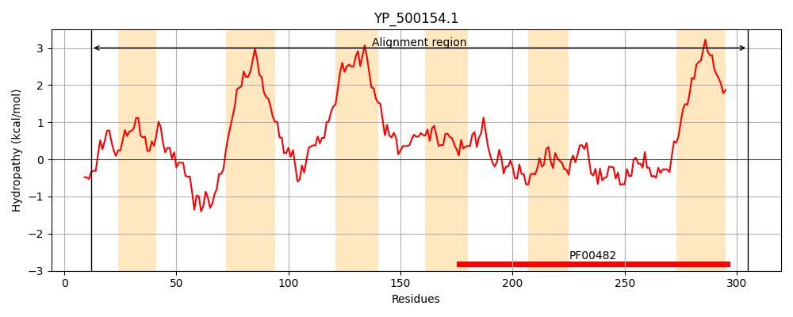
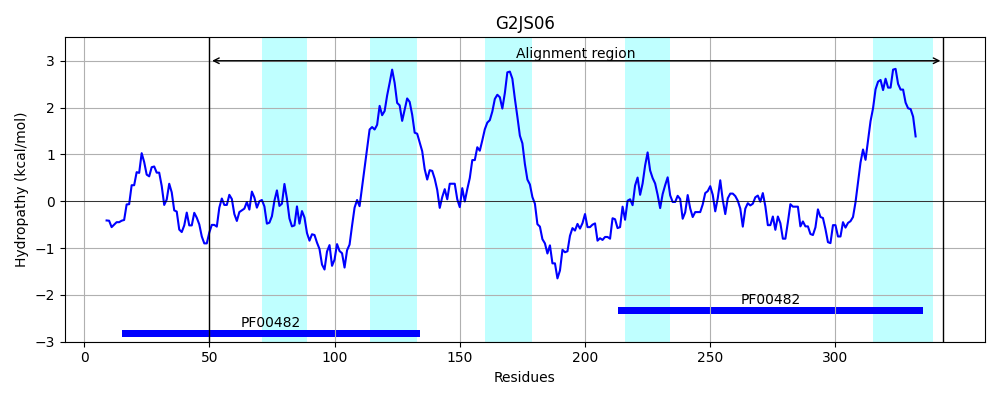
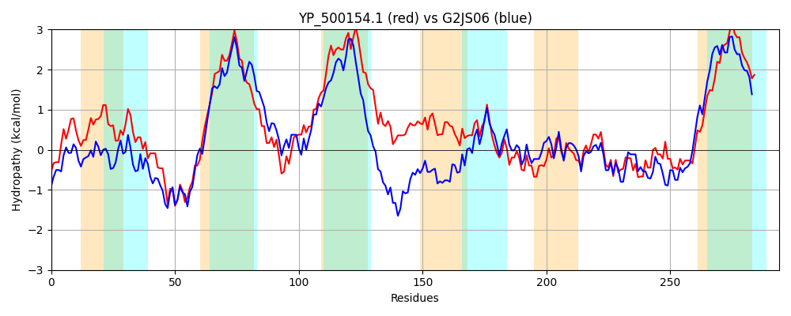

Hit Accession: G2JS06
Hit TCID: 3.A.14.1.2
Hit Description: gnl|BL_ORD_ID|4648 gnl|TC-DB|G2JS06|3.A.14.1.2 Late competence protein ComGB OS=Listeria monocytogenes J0161 GN=LMOG_00363 PE=4 SV=1
Mach Len: 294
e:0.000000
Query TMS Count : 6
Hit TMS Count: 5
TMS-Overlap Score: 3.450000
Predicted Substrates:CHEBI:8526;protein polypeptide chain
BLAST Alignment:
Score: 379 , Bit scores: 150 bits, E-value: 4.4e-43, Alignment length: 294, Percentage identity: 27
Query: 12 ILSEISNGAPCNQILSLIGYSDTIVMQVYLAERFGNIIDVLEETVNYMKVNRKSEQRLLKTLQYPLILVSIFIAMIIILNLTVIPQFQQLYTSMNIQLSSFQKTLSFFITSLPTIIVVMLIIVSMLAIIMKLIYNNLNMLNKINFVMKLPLISGYFQLFKTYFVTNELVLFYKNGITLQSIVDVYINHSSDPFRQFLGKYLLTYSEMGYGLPQILEKLKCFKPQLIKFVLQGEKRGKLEVELKLYSQILVKQIEDKAIKQTQFLQPILFLILGLFIVAIYLVIMLPMFQMMQSI 305
I++ ++NG + LS G+ D I Q++ A G + + ET +MK + + L+KT QYPL+L S I + +L + ++P+F+ L+T ++ + F + +P ++ + L+ + ++ + N ++ F ++P I + ++ + +++ EL K+G+++ I+ ++ S F Q + + +L E G L + LEK+ F+ +L + GEK G L E Y + ++ K K F+QPI+F+++G+ IV+IYL I+ PMF M+ I
Sbjct: 50 IITSLANGNSFSYALSKNGFPDFICSQLHYASSHGYFLQTIHETGVHMKRKAEEKNALMKTFQYPLVLFSTVILVFFLLRIFLLPKFELLFTQLSTNGTVGTNFTYFLLEKVPVLLGIFLLSLFLIFSFIIRKQKQKNAYDRAYFYCRIPYIRQFSRIHYSQYLSRELGYLLKSGLSITHIMHLFAQEESPAFFQEIARQILPTLEQGLSLTKALEKMPIFEKELYYIAIHGEKNGNLAEEFLFYYNLCHQKSLQKTEKLFSFIQPIVFIVIGILIVSIYLSILYPMFSMVNQI 343 | Protein Hydropathy Plots: |
|---|
|  |  |
Pairwise Alignment-Hydropathy Plot:
|
|---|
|  |